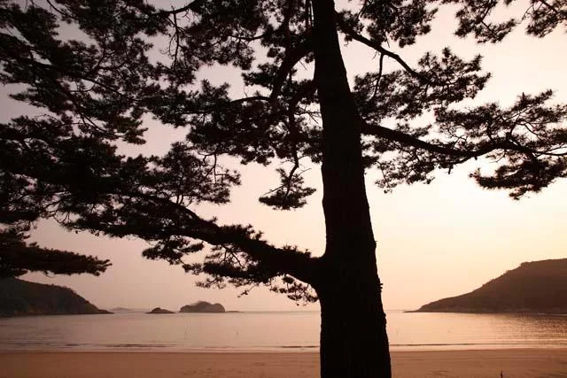
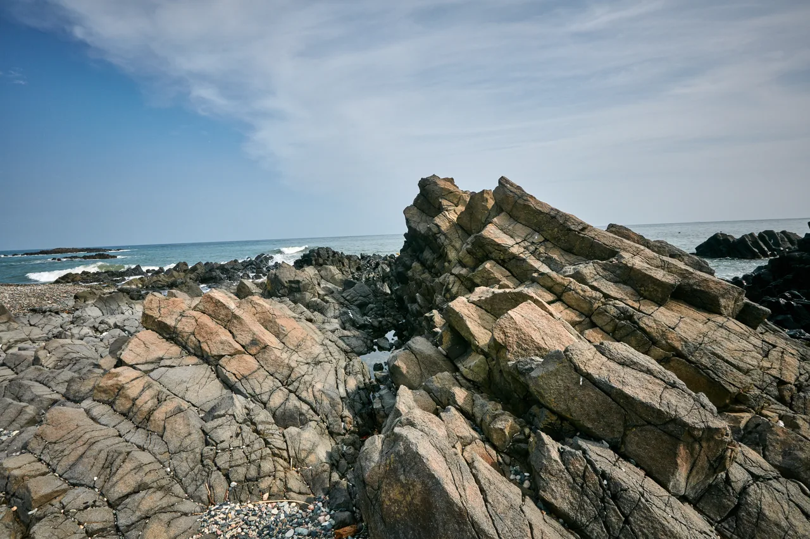

▲ 신안 천사대교. 사장교와 현수교를 한 교량에 함께 배치한 국내 최초 사례다 ⓒ 한국관광공사 (공공누리 제1유형)
섬 여행의 가장 큰 장벽은 거리가 아니라 배 시간표였습니다. 하루 몇 편뿐인 항로에 일정을 맞춰야 했고, 기상이 나쁘면 통째로 취소됐습니다.
연륙교가 놓이면서 그 조건이 바뀐 섬들이 있습니다.
1. 천사대교, 10.8km
| 항목 | 내용 |
|---|---|
| 노선 | 국도 2호선 |
| 연결 | 목포 압해도 ↔ 신안 암태도 |
| 총연장 | 10.8km (교량 7.22km) |
| 폭 | 11.5m |
| 개통 | 2019년 4월 4일 |
| 구조 | 사장교 3.58km + 현수교 3.64km · 동시 배치 국내 최초 |
| 주탑 | 최대 195m |
| 착공 | 2010년 9월 15일 — 약 9년 공사 |
📍 왜 한 다리에 두 형식을 썼나
사장교는 주탑에서 케이블을 비스듬히 내려 상판을 직접 잡습니다. 현수교는 주케이블을 늘어뜨리고 거기서 수직 케이블로 상판을 답니다.
둘은 경제적인 경간(주탑 사이 거리)이 다릅니다. 사장교는 중간 길이, 현수교는 아주 긴 경간에서 유리합니다. 천사대교는 구간마다 수심과 항로 폭이 달라 한 형식으로 전 구간을 덮는 것이 비효율적이었고, 그래서 두 형식을 이어 붙였습니다.
2. 배편 시절의 조건
개통 전 이 구간은 배로만 오갈 수 있었습니다. 한국관광공사 자료에 따르면 네 섬에 닿으려면 배로 25분을 가야 했습니다.
다만 실제 부담은 항해 시간이 아니었습니다. 그 앞뒤에 붙는 시간이 훨씬 길었습니다.
| 요소 | 내용 |
|---|---|
| 대기 | 차량 선적 줄서기 — 성수기엔 다음 배 |
| 시간표 | 하루 정해진 편수에 일정을 맞춰야 함 |
| 기상 | 풍랑주의보 시 전면 결항 |
| 비용 | 차량 선적 운임 별도 |

▲ 차량을 실어 나르는 여객선. 연륙교가 없는 섬은 여전히 이 방식이다 ⓒ 한일고속
다리가 놓이면서 이 네 가지가 한꺼번에 사라졌습니다. 특히 결항 리스크가 없어진 것이 여행 계획을 근본적으로 바꿨습니다.

▲ 자은도 백길해수욕장 일대. 규사 성분이 많아 백사장이 유독 희다 ⓒ 한국관광공사 (공공누리 제1유형)
3. 다리 하나가 아홉 개 면을 열었습니다
천사대교가 여는 곳은 암태도 하나가 아닙니다. 암태도에서 다시 다리로 이어지는 섬들이 있어, 결과적으로 신안의 여러 면이 차로 연결됐습니다.
암태도에서 팔금도 → 안좌도, 그리고 자은도 방향으로 각각 다리가 이어집니다. 배 없이 섬에서 섬으로 차를 몰고 넘어갈 수 있습니다.
| 섬 | 특징 |
|---|---|
| 암태도 | 천사대교가 닿는 관문 · 기동삼거리 부부 벽화 |
| 팔금도 | 네 섬 중 가장 작고 조용함 |
| 안좌도 | 네 섬 중 인구 최다 · 김환기 화백 생가 |
| 자은도 | 여행객이 가장 많이 찾음 · 해수욕장 9곳 |

▲ 신안 다도해. 다리로 이어진 섬들을 차로 건너며 볼 수 있게 됐다 ⓒ 한국관광공사 (공공누리 제1유형)

▲ 다리로 연결된 섬은 해변까지 차로 바로 들어간다 ⓒ 한국관광공사 (공공누리 제1유형)
4. 자동차전용도로입니다
가장 자주 놓치는 부분입니다. 천사대교는 자동차전용도로로 지정돼 있습니다.
| 구분 | 가능 여부 |
|---|---|
| 승용차·화물차 | 통행 가능 |
| 이륜차 | 통행 불가 |
| 자전거·보행자 | 통행 불가 |
| 다리 위 정차 | 금지 — 사진 촬영 목적도 해당 |
📍 다리 위에 세우면 안 됩니다
경관이 좋다 보니 다리 위 갓길에 세우고 사진을 찍는 경우가 나옵니다. 자동차전용도로에서의 정차는 단속 대상이며, 무엇보다 위험합니다.
교량 구간은 측풍이 강합니다. 육지 도로와 달리 바람을 막아줄 지형이 없어, 정차한 차 옆을 지나는 차량이 순간적으로 밀릴 수 있습니다. 촬영은 양안의 전망 지점에서 하는 것이 원칙입니다.

▲ 섬 해안은 지형 변화가 커 짧은 거리에도 풍경이 계속 바뀐다 ⓒ 한국관광공사 (공공누리 제1유형)
5. 다른 연륙교들
연륙교로 차가 들어가는 섬은 신안뿐이 아닙니다. 서해와 남해 곳곳에 비슷한 구조가 생겼습니다.
다만 다리가 있다고 모든 섬이 같아진 것은 아닙니다. 다리로 본섬까지만 들어가고, 그 안쪽 부속 섬은 여전히 배인 경우가 많습니다.

▲ 목포 연안여객터미널. 다리가 닿지 않는 섬은 여기서 배로 간다 ⓒ 한국관광공사 (공공누리 제1유형)

▲ 서해 북부 섬은 인천에서 출발한다. 이쪽은 아직 배가 유일한 수단인 곳이 많다 ⓒ 한국관광공사 (공공누리 제1유형)

▲ 다리로 들어간 섬은 해가 진 뒤에도 돌아 나올 수 있다 ⓒ 한국관광공사 (공공누리 제1유형)
6. 섬 드라이브에서 챙길 것
| 항목 | 이유 |
|---|---|
| 주유 | 섬 안 주유소는 수가 적고 영업시간이 짧음 |
| 충전 | 전기차는 충전기 위치를 미리 확인 |
| 타이어 | 해안 도로는 노면 상태 편차가 큼 |
| 염분 | 귀가 후 하부 세차 권장 |

▲ 섬과 해안도로를 묶으면 하루 코스가 나온다. 일몰 시각만 미리 확인하면 된다 ⓒ 태안군
7. 정리
천사대교는 국도 2호선으로 압해도와 암태도를 잇는 총연장 10.8km(교량 7.22km, 폭 11.5m) 구간이며 2010년 9월 착공해 2019년 4월 4일 개통했습니다. 사장교 3.58km와 현수교 3.64km로 구성돼 두 형식을 한 교량에 함께 배치한 국내 최초 사례이며, 주탑 최대 높이는 195m입니다. 국내 해상교량 중 네 번째로 길고 국도 교량으로는 가장 깁니다.
개통 전에는 배로 25분을 가야 했습니다. 다리가 놓이면서 선적 대기·시간표·결항·운임이 한꺼번에 사라졌고, 암태도에서 팔금도·안좌도·자은도로 다시 다리가 이어져 섬에서 섬으로 차를 몰 수 있게 됐습니다. 자은도에는 해수욕장만 9곳이 있고, 안좌도에는 김환기 화백의 생가가 있습니다.
다만 개통과 동시에 자동차전용도로로 지정돼 이륜차와 보행자, 자전거는 통행할 수 없고 다리 위 정차도 금지입니다. 교량 구간은 측풍이 강해 실제로도 위험합니다. 섬 안에서는 주유소와 충전기 수가 적으므로 진입 전에 채워두는 편이 안전합니다.